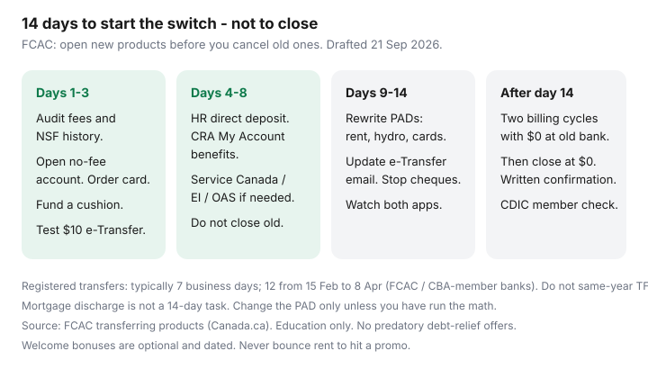

Personal Finance · Canada
How to Switch Banks in Canada Without Missing a Bill: A 14-Day Fee Escape Plan
Monthly account fees and NSF charges quietly take $10–$30+ a month while households wait for “a quiet week” that never comes. Switching banks in Canada is not a U.S. automated switch kit. It is a sequence: audit, open, move payroll and PADs, overlap two billing cycles, then close. The Financial Consumer Agency of Canada (FCAC) is explicit — get the new products in place before you cancel the old ones, and watch the old account so you do not eat NSF.
This is a 14-day operating plan plus an overlap, not a promise that every PAD flips in 14 days. Government deposits, registered-plan transfers, and some lenders take longer. Date-stamped 21 Sep 2026.
Disclosure: No-fee chequing accounts and bank switching promo offers are offer types. Saving Optimizer may later add partner links. We do not currently claim bank partnerships and we do not invent live “$400 to switch” deals. This is education, not an FCAC form and not legal advice. No debt-relief, payday, or settlement pitches.
Key takeaways
- Audit every fee, NSF risk, and minimum-balance trap on the current package before you pick a destination.
- Open the new no-fee account first. Move payroll and government direct deposit before you cancel anything.
- FCAC’s transfer pages: list products and automated transactions, transfer funds, set up PADs, review, then close. Registered-plan transfers at CBA-member banks: typically 7 business days, 12 during 15 Feb–8 Apr peak.
- Keep a buffer at the old bank until two full billing cycles are clean — longer than 14 days for monthly PADs.
- Close with a $0 balance, ask for written confirmation, and confirm CDIC membership at the new institution.
Audit every monthly fee, NSF risk, and minimum-balance trap on your current accounts
Print or PDF three months of chequing. Highlight:
- Monthly package fee and the balance that would waive it (often thousands at a Big-5).
- Interac e-Transfer fees if you are still on an old tariff.
- NSF / returned-item fees when a PAD hit an empty Tuesday.
- ATM fees outside the network.
- Paper-statement or draft fees you forgot.
- Credit-card or LOC payments that PAD from this account — those are not “the bank,” but they bounce here.
If the package is $16.95 and you never hit the waiver, that is $203.40 a year before one NSF. A no-fee digital account plus a named HISA is the usual replacement. If you are in hardship, FCAC and provincial credit-counselling non-profits are the path — not a DMed “debt relief” firm.
Pick a no-fee destination that fits ATM, Interac, and direct-deposit needs
Use the stack guide: Simplii for CIBC ATMs and cash deposits, Tangerine for Scotiabank ABMs, EQ if payroll can land and you can live with ATM rebates. Match the destination to cash and PAD reality, not to a welcome-bonus tile. Simplii advertised $300 + $50 Skip (21 Sep 2026) and Tangerine a $250 payroll bonus for qualifying new clients through 31 Oct 2026 — dated offer types. A bounced rent PAD costs more than the bonus.
Identity: new banks will ask for ID and usually a SIN. Have two pieces of ID ready. Digital verification (Interac document verification on Simplii’s page) still fails for some newcomers; a video call or in-person partner is plan B, not a reason to keep the fee package forever.
Open the new account and move payroll / PAD list before you close anything
Days 1–3 of the 14-day sprint:
- Open the account. Order the card. Fund $500–$1,000 from the old bank so PADs have a cushion.
- Send a $10 e-Transfer to yourself and pay a $1 test bill (a small utility or a credit-card payment) so bill pay is proven.
- Give HR the new direct-deposit form the same day the card is active. Payroll cycles can be weekly, bi-weekly, or monthly — a “14-day plan” that starts the day after a monthly payday is really a 45-day plan. Start immediately after a pay lands at the old bank so you still have a full cycle of overlap.
- Update CRA My Account direct deposit for tax refunds, CCB, GST/HST credit, and any benefit you actually receive. Service Canada / provincial portals separately for EI, OAS, workers’ comp.

FCAC-style transfer checklist: cards, loans, investments, and government deposits
FCAC’s “Transferring your products or services” walkthrough (Canada.ca) is the official sequencing. Translate it into a household list:
| Item | When in the 14-day sprint | Watch-outs |
|---|---|---|
| Chequing / savings cash | Day 1–4: open and fund. Drain only after overlap. | Holds on large e-Transfers and EFTs (EQ EFT 2–3 business days). |
| Payroll | Day 2–5: HR form. | One missed cycle is why the old account stays open. |
| PADs (rent, utilities, insurance, subscriptions) | Day 5–12: one vendor a night. | Some billers take a cycle to flip. Keep a float at both. |
| Government direct deposit | Day 3–7: CRA / Service Canada. | Refunds and CCB are easy to forget until April. |
| Credit cards / LOCs | Do not “transfer” unless you applied and were approved. | FCAC: you may need to qualify again. Keep paying the old card from the new chequing PAD. |
| Registered plans (TFSA, RRSP, FHSA, RESP) | After cashflow works. In-kind or cash transfer via forms (T2033 / RC forms). | CBA-member banks: 7 business days typical; 12 from 15 Feb–8 Apr. Do not withdraw and recontribute a TFSA in the same year. |
| Mortgage / HELOC | Not a 14-day project. | Discharge and setup fees can erase years of package savings. Leave it; change the payment PAD only. |
Stop-payments on old cheques if you still write them. Tell anyone who e-Transfers you the new email. Change the credit-card payment account in each issuer’s app — a Visa that still PADs the closed chequing account is an NSF you will blame on “switching.”
Keep a small buffer at the old bank until two full billing cycles clear
Monthly PADs (hydro, internet, insurance) need two statements with $0 activity on the old account before you close. That will exceed 14 days. The 14-day plan is for opening, payroll, and the first rewrite pass. The overlap is the safety. Leave enough to cover the largest PAD plus one NSF so a forgotten gym membership cannot tank the close.
Watch both apps daily for 10 days, then every payday for two months. If something hits the old account, pay it and rewrite that biller the same afternoon.
Close cleanly and confirm CDIC coverage at the new institution
Balance $0 (FCAC/NerdWallet-style guidance: you generally cannot close in overdraft). Ask whether a closing fee applies. Request written confirmation the account is closed. Download 12 months of PDFs first — you will want them for a landlord, a mortgage application, or a CRA question.
Search cdic.ca for the new institution’s member name. EQ Bank deposits aggregate with Equitable Bank. Tangerine Bank is a member. Simplii sits in the CIBC family — confirm the member listed on CDIC, not the marketing brand. If cash will exceed $100,000 in one unregistered category, split members using the CDIC category notes.
After close: update your credit-report addresses if a card moved, and cancel old online-banking access so a stale cookie is not a fraud surface.
Sources & date stamps
- FCAC, Transferring your products or services to another financial institution — open new first; list automated transactions; avoid NSF during the switch (Canada.ca, used 21 Sep 2026).
- FCAC, Registered products: know your rights — CBA-member registered-plan transfer timelines 7 business days, 12 from 15 Feb–8 Apr.
- Simplii and Tangerine public welcome/payroll offers as dated offer types (used 21 Sep 2026).
- CDIC member/category rules; EQ Bank Equitable aggregation note.
Frequently asked questions
How long does a Canadian bank switch really take?
You can open a digital account in a day and move payroll in one HR cycle. Monthly PADs need two clean billing cycles at the old bank. Registered-plan transfers are often 7 business days (12 in RRSP season). Mortgages are a separate project. The “14-day” label is the sprint to get the new rail live, not a close date.
Will the new bank move my PADs for me?
Some will help with a switching checklist. You still own the vendor list. FCAC’s sequence is: identify automated transactions, then you (or the biller) change them. Do not close until the list is boring.
What if my employer pays into a specific Big-5 account?
Most Canadian employers accept any Canadian chequing account via a void cheque or direct-deposit form. If a payroll vendor is picky, ask HR for the exact file format. A leftover Big-5 account is a last resort, not the default.
Can I switch if I have a mortgage at the old bank?
Yes for chequing. Leave the mortgage unless you have run discharge-and-setup math. Change the mortgage PAD to the new chequing account so the fee package is no longer the payment rail.
Are switching bonuses worth bouncing a bill?
No. NSF and landlord hassle dwarf a $250–$300 new-client bonus. Hit bonus conditions only if payroll and rent already succeed on the new account.